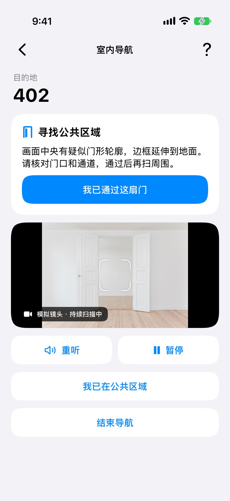
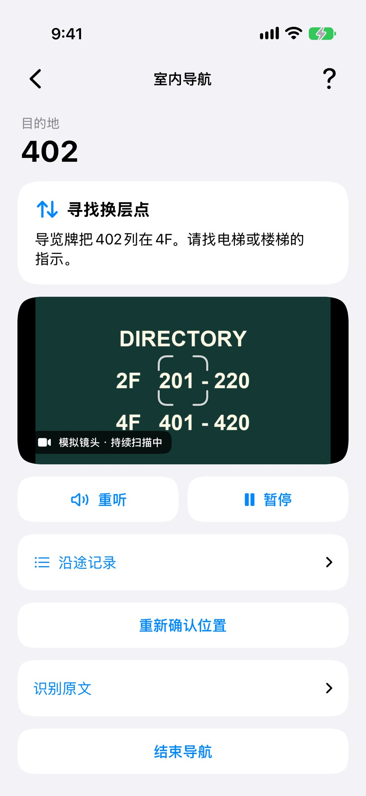
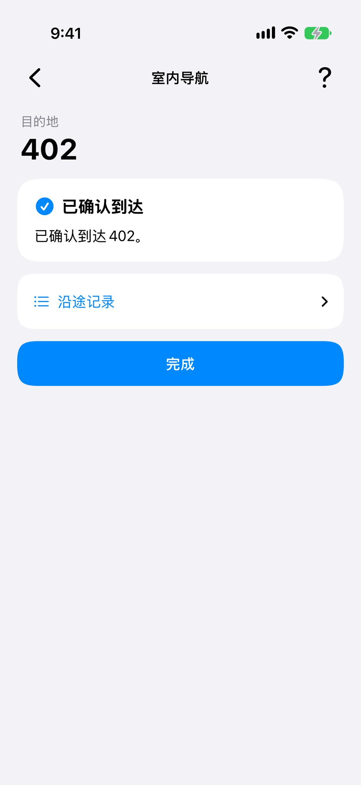

CrossPointX 2026 · Apple Human-Centered Care
室内寻路
输入想去的房号、科室或店名。站定后转动 iPhone，手机会读出沿途的标识，提示下一步该找什么。
这段模拟器录屏使用连续测试帧。输入 402 后，镜头依次扫过门、楼层目录、电梯和独立门牌。标牌文字和箭头由 App 实时识读。
浅色首页 · 深色导航


从房间找到 402






现场试用
医院入口和商场使用同一个入口。输入现场科室或店名，扫目录中对应的一行。对同名条目，可按分区或楼层选择。路线线索不足时可以询问服务台。行走时请继续使用惯常的出行辅助。